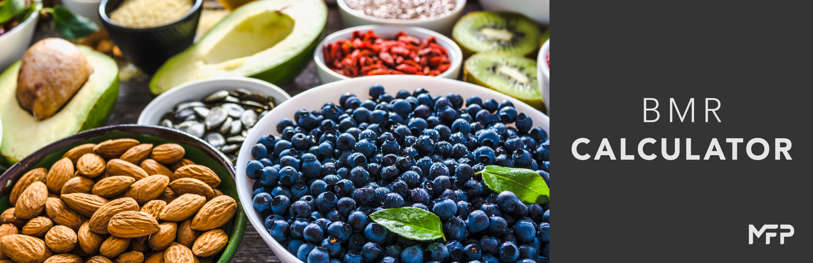

Let's Calculate your BMR!
Metric Calculator
Imperial Calculator
BMR Metric
Male
Female
Age
Height (cm)
Weight (kg)
Select your activity level:
I am sedentary (little or no exercise)(1.2)
I am lightly active (light exercise or sports 1-3 days per week)(1.375)
I am moderately active (moderate exercise or sports 3-5 days per week)(1.55)
I am very active (hard exercise or sports 6-7 days per week)(1.725)
I am super active(very hard exercise or sports and physical job or 2x training)(1.9)